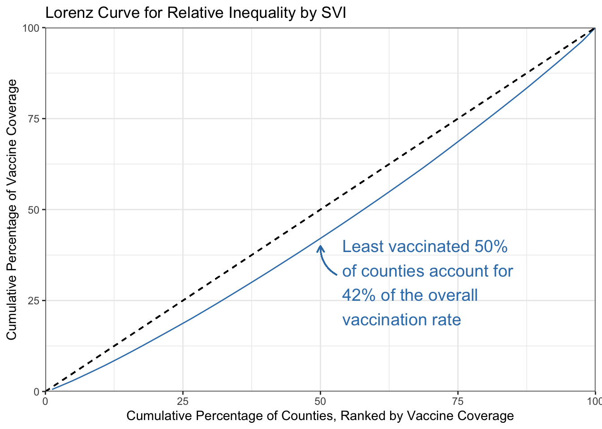
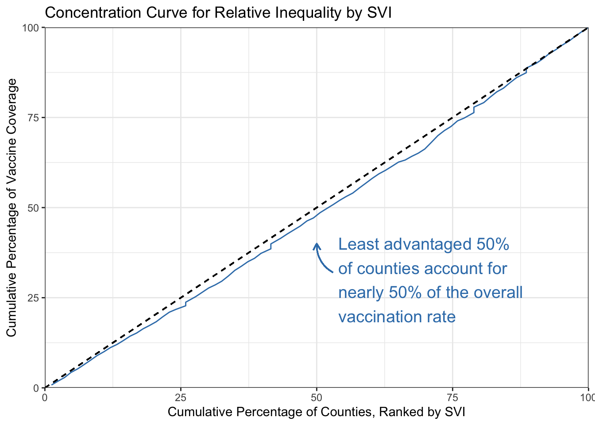
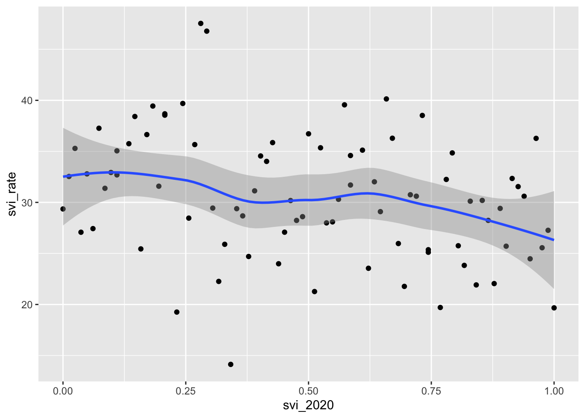
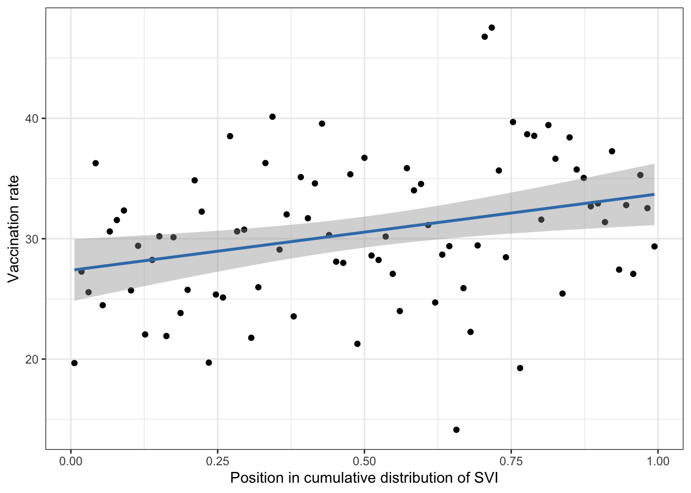

Code
library(here)
library(tidyverse)
library(readxl)
library(lubridate)
library(tsibble)
library(haven)
library(kableExtra)
library(rineq)
library(marginaleffects)Let’s load the required packages for the analysis:
library(here)
library(tidyverse)
library(readxl)
library(lubridate)
library(tsibble)
library(haven)
library(kableExtra)
library(rineq)
library(marginaleffects)Next let’s read in the county-level data containing the SVI and SDI indexes
# read in data
# get county disadvantage index
dd <- read_dta(here("data", "svi-sdi.dta"))
glimpse(dd)Rows: 83
Columns: 13
$ ST <dbl> 26, 26, 26, 26, 26, 26, 26, 26, 26, 26, 26, 26, …
$ STATE <chr> "Michigan", "Michigan", "Michigan", "Michigan", …
$ ST_ABBR <chr> "MI", "MI", "MI", "MI", "MI", "MI", "MI", "MI", …
$ STCNTY <dbl> 26001, 26003, 26005, 26007, 26009, 26011, 26013,…
$ COUNTY <chr> "Alcona", "Alger", "Allegan", "Alpena", "Antrim"…
$ FIPS <dbl> 26001, 26003, 26005, 26007, 26009, 26011, 26013,…
$ LOCATION <chr> "Alcona County, Michigan", "Alger County, Michig…
$ SVI_AREA_SQMI <dbl> 674.6550, 915.0338, 825.2527, 571.8963, 475.6787…
$ SVI_TOTPOP <dbl> 10396, 9098, 117104, 28431, 23301, 15013, 8337, …
$ SVI_2020 <dbl> 0.1098, 0.4634, 0.2561, 0.4268, 0.0488, 0.4146, …
$ SDI_County_population <dbl> 10353, 9151, 116143, 28520, 23206, 15070, 8421, …
$ SDI_2020 <dbl> 42, 22, 18, 33, 14, 49, 49, 7, 49, 8, 58, 53, 57…
$ SDI_2020_01 <dbl> 0.42, 0.22, 0.18, 0.33, 0.14, 0.49, 0.49, 0.07, …Next we’ll drop everything except the SDI and SVI metrics and population sizes, and create quintiles of each. Note here that this creates quintiles based on the unweighted distribution of counties. Weighted quintiles would likely produce a somewhat different distribution, but is still possible.
# create quintiles of SVI and SDI scores
dq <- dd %>% rename_all(tolower) %>%
select(county, svi_totpop, svi_2020,
sdi_county_population, sdi_2020) %>%
mutate(sdiq = ntile(sdi_2020, 5),
sviq = ntile(svi_2020, 5)) Now let’s check to make sure that our quintiles contain increasing values of each index:
# check quintile values
dq %>% group_by(sdiq) %>%
summarize(msdi = mean(sdi_2020)) %>%
kbl() %>%
kable_styling()| sdiq | msdi |
|---|---|
| 1 | 10.47059 |
| 2 | 26.52941 |
| 3 | 41.41176 |
| 4 | 51.56250 |
| 5 | 66.25000 |
dq %>% group_by(sviq) %>%
summarize(msvi = mean(svi_2020))%>%
kbl() %>%
kable_styling()| sviq | msvi |
|---|---|
| 1 | 0.0968471 |
| 2 | 0.3041647 |
| 3 | 0.5114824 |
| 4 | 0.7126438 |
| 5 | 0.9085312 |
Seems reasonable.
Now let’s read in the vaccine numerator data. Although data exist for the “Unknown” race this is problematic for matching with denonminators, so end up dropping it. Also restricting to ages 18 and over, but collapsing across those age categories. Could revisit to age-adjust or stratify later, but not sure how important it is for preliminary analysis.
# vaccine numerators
vn <- read_excel(here("data", "week-15-administered.xlsx"),
col_names = c("county", "lhd", "raceeth", "agegp",
"sex", "facility", "doses", "date"), skip = 1)
# summarize doses by county and race (adults)
vns <- vn %>% select(county, raceeth, agegp, doses) %>%
# recode race
mutate(race = recode(raceeth, `Hispanic` = 1,
`NH American Indian/Alaska Native` = 2,
`NH Asian/Native Hawaiian/Other Pacific Islands` = 3,
`NH Black` = 4, `NH Other Race` = 5, `NH White` = 6,
`Unknown` = 7, .default = NA_real_),
# recode age
age = recode(agegp, `6 months through 4 years` = 1,
`5 through 12 years` = 2, `13 through 17 years` = 3,
`18 through 24 years` = 4, `25 through 49 years` = 5,
`50 through 64 years` = 6, `65 years and older` = 7)) %>%
# limit to adults
filter(age>=4 & race<7) %>% drop_na() %>%
group_by(county, age, race) %>%
summarise(doses = sum(doses))
glimpse(vns)Rows: 1,957
Columns: 4
Groups: county, age [340]
$ county <chr> "Alcona", "Alcona", "Alcona", "Alcona", "Alcona", "Alcona", "Al…
$ age <dbl> 4, 4, 4, 4, 4, 5, 5, 5, 5, 5, 5, 6, 6, 6, 6, 6, 7, 7, 7, 7, 7, …
$ race <dbl> 1, 2, 4, 5, 6, 1, 2, 3, 4, 5, 6, 1, 2, 4, 5, 6, 1, 2, 3, 4, 5, …
$ doses <dbl> 1, 1, 3, 1, 49, 7, 2, 1, 3, 5, 251, 9, 5, 1, 35, 562, 19, 3, 4,…Now we need the denominators. This file is a little different since it has population data for each month of the vaccine season, so those populations can’t just be summed up. Instead, we average over months for each county/race/age/sex group, then sum them up.
# vaccine denominators
vd <- read_excel(here("data", "coverage.xlsx"),
col_names = c("season", "county", "lhd", "raceeth",
"agegp", "sex", "month", "flu_week", "pop",
"coverage", "date"), skip = 1)
# summarize population by county and race (adults)
vds <- vd %>%
filter(season == "2022-23") %>%
select(county, raceeth, agegp, sex, pop) %>%
# recode race
mutate(race = recode(raceeth, `Hispanic` = 1,
`NH American Indian/Alaska Native` = 2,
`NH Asian/Native Hawaiian/Other Pacific Islands` = 3,
`NH Black` = 4, `NH Other Race` = 5, `NH White` = 6,
`Unknown` = 7, .default = NA_real_),
# recode age
age = recode(agegp, `6 months through 4 years` = 1,
`5 through 12 years` = 2, `13 through 17 years` = 3,
`18 through 24 years` = 4, `25 through 49 years` = 5,
`50 through 64 years` = 6, `65 years and older` = 7)) %>%
# first need to get mean pop by month and sex
group_by(county,race,age,sex) %>%
summarise(mp = mean(pop, na.rm=TRUE)) %>%
ungroup() %>%
# limit to adults and drop NH Other race
filter(age>=4 & race<7) %>% drop_na() %>%
group_by(county, age, race) %>%
summarise(pop = sum(mp))
glimpse(vds)Rows: 1,933
Columns: 4
Groups: county, age [336]
$ county <chr> "Alcona", "Alcona", "Alcona", "Alcona", "Alcona", "Alcona", "Al…
$ age <dbl> 4, 4, 4, 4, 4, 5, 5, 5, 5, 5, 5, 6, 6, 6, 6, 6, 7, 7, 7, 7, 7, …
$ race <dbl> 1, 2, 4, 5, 6, 1, 2, 3, 4, 5, 6, 1, 2, 4, 5, 6, 1, 2, 3, 4, 5, …
$ pop <dbl> 5.000, 2.000, 5.000, 4.333, 459.359, 48.000, 12.001, 15.000, 20…Now we merge the numerators, denominators, and the county disadvantage indexes to get a dataset we can use to generate summary tables of vaccine coverage by race-ethnicity and disadvantage index.
# combine vaccines and population by county, race, age
vax <- vns %>%
left_join(vds, by = join_by(county, age, race)) %>%
# now combine with county deprivation indices
inner_join(dq, by = join_by(county)) %>%
# create race as factor
mutate(racef = recode_factor(race, `1` = "Hispanic",
`2` = "NH AI/AN", `3` = "NH API",
`4` = "NH Black", `5` = "NH Other",
`6` = "NH White"),
# create age as factor
agef = recode_factor(age, `4` = "18-24 years",
`5` = "25-49 years", `6` = "50-64 years",
`7` = "65+ years"))The first 10 rows of the dataset look like…
kable(head(vax, n=10), digits=3) %>%
kable_styling()| county | age | race | doses | pop | svi_totpop | svi_2020 | sdi_county_population | sdi_2020 | sdiq | sviq | racef | agef |
|---|---|---|---|---|---|---|---|---|---|---|---|---|
| Alcona | 4 | 1 | 1 | 5.000 | 10396 | 0.11 | 10353 | 42 | 3 | 1 | Hispanic | 18-24 years |
| Alcona | 4 | 2 | 1 | 2.000 | 10396 | 0.11 | 10353 | 42 | 3 | 1 | NH AI/AN | 18-24 years |
| Alcona | 4 | 4 | 3 | 5.000 | 10396 | 0.11 | 10353 | 42 | 3 | 1 | NH Black | 18-24 years |
| Alcona | 4 | 5 | 1 | 4.333 | 10396 | 0.11 | 10353 | 42 | 3 | 1 | NH Other | 18-24 years |
| Alcona | 4 | 6 | 49 | 459.359 | 10396 | 0.11 | 10353 | 42 | 3 | 1 | NH White | 18-24 years |
| Alcona | 5 | 1 | 7 | 48.000 | 10396 | 0.11 | 10353 | 42 | 3 | 1 | Hispanic | 25-49 years |
| Alcona | 5 | 2 | 2 | 12.001 | 10396 | 0.11 | 10353 | 42 | 3 | 1 | NH AI/AN | 25-49 years |
| Alcona | 5 | 3 | 1 | 15.000 | 10396 | 0.11 | 10353 | 42 | 3 | 1 | NH API | 25-49 years |
| Alcona | 5 | 4 | 3 | 20.999 | 10396 | 0.11 | 10353 | 42 | 3 | 1 | NH Black | 25-49 years |
| Alcona | 5 | 5 | 5 | 30.001 | 10396 | 0.11 | 10353 | 42 | 3 | 1 | NH Other | 25-49 years |
And now we can make the tables by summing up the number of vaccine doses and the population counts for each county deprivation quintile and race-ethnic group. To assess the impact of adjustment for age on estimated vaccine rates and differences, these estimates are based on models, but the crude rates below are equivalent to simple calculations by race. First, the crude estimates by race and SVI:
# generate vaccines and pop by race,age,SVI
t1 <- vax %>% filter(race!=5) %>%
group_by(racef, agef, sviq) %>%
summarise(doses = sum(doses),
pop = sum(pop)) %>%
mutate(pop100 = pop / 100,
rate = doses / pop * 100,
lnrate = log(rate),
sviqf = as.factor(sviq))
# model ignoring age
t1m <- glm(doses ~ racef * sviqf + offset(log(pop100)),
data = t1, family="poisson")
# model predictions (marginal predictions)
predictions(t1m,
newdata = datagrid(racef=unique,
sviqf=unique, pop100=1), type ="response") %>%
# reshape for table
select(racef, sviqf, estimate) %>%
pivot_wider(names_from = sviqf, names_prefix = "SVI",
values_from = estimate) %>%
kbl(digits=1, escape = FALSE,
caption = "Crude vaccination rates",
col.names = c("", "Q1", "Q2", "Q3", "Q4", "Q5")) %>%
add_header_above(c(" " = 1,
"SVI Quintile (1=lowest)" = 5)) %>%
kable_classic(html_font = "Helvetica", full_width = F) %>%
footnote(general = "SVI quintiles based on unweighted distribution across counties.")| Q1 | Q2 | Q3 | Q4 | Q5 | |
|---|---|---|---|---|---|
| Hispanic | 25.6 | 26.1 | 22.2 | 26.2 | 23.7 |
| NH AI/AN | 32.7 | 28.4 | 24.6 | 32.7 | 26.1 |
| NH Black | 20.3 | 24.1 | 16.9 | 22.6 | 21.0 |
| NH White | 29.2 | 32.0 | 27.2 | 32.5 | 27.7 |
| NH API | 26.9 | 35.7 | 22.0 | 23.8 | 23.2 |
| Note: | |||||
| SVI quintiles based on unweighted distribution across counties. |
Now the marginal predictions with adjustment for age:
# model adjusted for age
t1m2 <- glm(doses ~ racef * sviqf + as.factor(agef) +
offset(log(pop100)), data = t1, family="poisson")
# model predictions (marginal predictions)
predictions(t1m2,
by = c("racef", "sviqf"),
newdata = datagrid(racef=unique, sviqf=unique,
agef=unique, pop100=1), type ="response") %>%
# reshape for table
select(racef, sviqf, estimate) %>%
pivot_wider(names_from = sviqf, names_prefix = "SVI",
values_from = estimate) %>%
kbl(digits=1, escape = FALSE,
caption = "Age-adjusted vaccination rates",
col.names = c("", "Q1", "Q2", "Q3", "Q4", "Q5")) %>%
add_header_above(c(" " = 1,
"SVI Quintile (1=lowest)" = 5)) %>%
kable_classic(html_font = "Helvetica", full_width = F) %>%
footnote(general = "SVI quintiles based on unweighted distribution across counties.")| Q1 | Q2 | Q3 | Q4 | Q5 | |
|---|---|---|---|---|---|
| Hispanic | 32.6 | 34.1 | 27.4 | 34.5 | 29.7 |
| NH AI/AN | 33.9 | 30.8 | 25.9 | 35.2 | 28.9 |
| NH Black | 21.1 | 28.2 | 20.7 | 27.0 | 23.3 |
| NH White | 28.1 | 31.4 | 26.0 | 32.5 | 26.7 |
| NH API | 32.4 | 45.8 | 25.5 | 31.1 | 26.1 |
| Note: | |||||
| SVI quintiles based on unweighted distribution across counties. |
Age-adjustment seems to generally lead to larger estimates of vaccination rates, especially for Hispanics and NH APIs, but this varies a bit by SVI quintile.
Here are the crude rates by SDI:
# generate vaccines and pop by race,age,SVI
t2 <- vax %>% filter(race!=5) %>%
group_by(racef, agef, sdiq) %>%
summarise(doses = sum(doses),
pop = sum(pop)) %>%
mutate(pop100 = pop / 100,
rate = doses / pop * 100,
lnrate = log(rate),
sdiqf = as.factor(sdiq))
# model ignoring age
t2m <- glm(doses ~ racef * sdiqf + offset(log(pop100)),
data = t2, family="poisson")
# model predictions (marginal predictions)
predictions(t2m,
newdata = datagrid(racef=unique,
sdiqf=unique, pop100=1), type ="response") %>%
# reshape for table
select(racef, sdiqf, estimate) %>%
pivot_wider(names_from = sdiqf, names_prefix = "SDI",
values_from = estimate) %>%
kbl(digits=1, escape = FALSE,
caption = "Crude vaccination rates",
col.names = c("", "Q1", "Q2", "Q3", "Q4", "Q5")) %>%
add_header_above(c(" " = 1,
"SDI Quintile (1=lowest)" = 5)) %>%
kable_classic(html_font = "Helvetica", full_width = F) %>%
footnote(general = "SDI quintiles based on unweighted distribution across counties.")| Q1 | Q2 | Q3 | Q4 | Q5 | |
|---|---|---|---|---|---|
| Hispanic | 25.3 | 25.4 | 30.3 | 20.6 | 24.1 |
| NH AI/AN | 33.0 | 31.4 | 27.1 | 21.1 | 27.9 |
| NH Black | 20.2 | 20.0 | 24.7 | 19.2 | 20.9 |
| NH White | 30.2 | 29.1 | 34.0 | 29.1 | 27.8 |
| NH API | 26.4 | 24.1 | 37.7 | 20.8 | 22.4 |
| Note: | |||||
| SDI quintiles based on unweighted distribution across counties. |
Now the marginal predictions for race-ethnic inequalities by SDI with adjustment for age:
# model adjusted for age
t2m2 <- glm(doses ~ racef * sdiqf + as.factor(agef) +
offset(log(pop100)), data = t2, family="poisson")
# model predictions (marginal predictions)
predictions(t2m2,
by = c("racef", "sdiqf"),
newdata = datagrid(racef=unique, sdiqf=unique,
agef=unique, pop100=1), type ="response") %>%
# reshape for table
select(racef, sdiqf, estimate) %>%
pivot_wider(names_from = sdiqf, names_prefix = "SDI",
values_from = estimate) %>%
kbl(digits=1, escape = FALSE,
caption = "Age-adjusted vaccination rates",
col.names = c("", "Q1", "Q2", "Q3", "Q4", "Q5")) %>%
add_header_above(c(" " = 1,
"SDI Quintile (1=lowest)" = 5)) %>%
kable_classic(html_font = "Helvetica", full_width = F) %>%
footnote(general = "SDI quintiles based on unweighted distribution across counties.")| Q1 | Q2 | Q3 | Q4 | Q5 | |
|---|---|---|---|---|---|
| Hispanic | 32.5 | 32.9 | 40.3 | 26.4 | 30.0 |
| NH AI/AN | 34.9 | 34.0 | 29.0 | 21.4 | 31.4 |
| NH Black | 21.2 | 24.1 | 29.6 | 21.4 | 23.5 |
| NH White | 29.4 | 28.3 | 33.6 | 27.4 | 27.2 |
| NH API | 31.9 | 28.3 | 49.4 | 24.2 | 26.6 |
| Note: | |||||
| SDI quintiles based on unweighted distribution across counties. |
To calculate inequalities across the entire range of measures of disadvantage like SVI or SDI (at either the county or the tract level), we can take two approaches. One is ‘univariate’ in the sense that we want to estimate how unequal the distribution of vaccine coverage is across counties (or tracts). To visualize what this means, we can create a Lorenz curve that first ranks all counties (or tracts) by their vaccine coverage rate (lowest to highest), then plots on the x-axis the county’s place in the cumulative distribution of counties, ranked by vaccine coverage, and on the y-axis the cumulative contribution to the overall vaccination rate. Lorenz curves can be either on the absolute or relative scale, but typically the relative scale is more common, as it leads to one of the most common measures of univariate inequality, the Gini coefficient.
Below we can see the Lorenz curve for counties, ranked by their vaccine coverage rate:
f1 <- vn %>% select(county, doses) %>%
group_by(county) %>%
summarise(tdoses = sum(doses)) %>%
right_join(dq, by = join_by(county)) %>%
mutate(svi_rate = tdoses / svi_totpop * 100,
sdi_rate = tdoses / sdi_county_population * 100)
f1_label <- "Least vaccinated 50%\nof counties account for\n42% of the overall\nvaccination rate"
f1 %>%
arrange(svi_rate) %>%
mutate(cpc = rank(svi_rate)/length(svi_rate)*100,
cpv = cumsum(svi_rate)/sum(svi_rate)*100) %>%
ggplot(aes(x = cpc, y = cpv, colour="coverage")) + geom_line() +
geom_segment(aes(x = 0, y = 0, xend = 100, yend = 100,
colour = "equality"), linetype = 'dashed') +
coord_cartesian(expand=FALSE) +
scale_x_continuous(limits = c(0,100)) +
scale_y_continuous(limits = c(0,100)) +
scale_color_manual(values = c("#377eb8", "black")) +
theme_bw() + theme(legend.position = "none") +
geom_curve(aes(x = 53, y = 32, xend = 50, yend = 40),
curvature = -0.3, arrow = arrow(length = unit(0.02, "npc"))) +
annotate("text", label = f1_label, x = 54, y = 30,
size = 5, colour = "#377eb8", hjust=0) +
labs(x = "Cumulative Percentage of Counties, Ranked by Vaccine Coverage",
y = "Cumulative Percentage of Vaccine Coverage",
title = "Lorenz Curve for Relative Inequality by SVI")
As noted, the Lorenz curve above measures inequality in a univariate way, it does not say anything about whether, for example, more disadvantaged counties have higher or lower vaccination coverate. To calculate a bivariate measure of inequality, we can use the Concentration index. Now instead of ranking counties based on their vaccination rate, we rank counties on the basis of disadvantage (SVI or SDI). We can then plot a Concentration curve, that puts disadvantage rank on the x-axis and each counties proportional contribution to the overall vaccination rate on the y-axis.
f2_label <- "Least advantaged 50%\nof counties account for\nnearly 50% of the overall\nvaccination rate"
f1 %>%
arrange(desc(svi_2020)) %>%
mutate(disadv = 1 - svi_2020,
cpc = rank(disadv)/length(disadv)*100,
cpv = cumsum(svi_rate)/sum(svi_rate)*100) %>%
ggplot(aes(x = cpc, y = cpv, colour="coverage")) + geom_line() +
geom_segment(aes(x = 0, y = 0, xend = 100, yend = 100,
colour = "equality"), linetype = 'dashed') +
coord_cartesian(expand=FALSE) +
scale_x_continuous(limits = c(0,100)) +
scale_y_continuous(limits = c(0,100)) +
scale_color_manual(values = c("#377eb8", "black")) +
theme_bw() + theme(legend.position = "none") +
geom_curve(aes(x = 53, y = 32, xend = 50, yend = 40),
curvature = -0.3, arrow = arrow(length = unit(0.02, "npc"))) +
annotate("text", label = f2_label, x = 54, y = 30,
size = 5, colour = "#377eb8", hjust=0) +
labs(x = "Cumulative Percentage of Counties, Ranked by SVI",
y = "Cumulative Percentage of Vaccine Coverage",
title = "Concentration Curve for Relative Inequality by SVI")
Both the Gini coefficient and the Concentration Index can be derived from these respective curves.
svi_gini <- ci(ineqvar = f1$svi_rate,
outcome=f1$svi_rate, method = "direct")
svi_conc <- ci(ineqvar = f1$svi_2020,
outcome=f1$svi_rate, method = "direct")
t3 <- tibble(gest = svi_gini$concentration_index) %>%
mutate(
gll = svi_gini$concentration_index
- 1.96 * sqrt(svi_gini$variance),
gul = svi_gini$concentration_index
+ 1.96 * sqrt(svi_gini$variance),
cest = svi_conc$concentration_index,
cll = svi_conc$concentration_index
- 1.96 * sqrt(svi_conc$variance),
cul = svi_conc$concentration_index
+ 1.96 * sqrt(svi_conc$variance))
t3 %>%
kbl(digits=2, escape = FALSE,
caption = "Vaccine coverage inequality across counties",
col.names = c("Est", "95% LL", "95% UL",
"Est", "95% LL", "95% UL")) %>%
add_header_above(c("Gini coefficient" = 3,
"Concentration index" = 3)) %>%
kable_classic(html_font = "Helvetica", full_width = F) %>%
footnote(general = "Estimates based on unweighted counties.")| Est | 95% LL | 95% UL | Est | 95% LL | 95% UL |
|---|---|---|---|---|---|
| 0.11 | 0.09 | 0.13 | -0.03 | -0.06 | -0.01 |
| Note: | |||||
| Estimates based on unweighted counties. |
One challenge with these indices of inequality is interpretation. The Gini coefficient, as a measure of univariate inequality, is generally easier to interpret. Since the Gini is the average value of differences in vaccine rates across all possible pairs of counties, its interpretation is the expected absolute gap between county vaccination rates relative to the average rate in the population. The Concentration index does not have a straightforward interpretation, so here the issue would be more like understanding how much it has changed from a benchmark at the beginning of our observation period.
One thing to note here is that, although there is certainly inequality in the distribution of vaccine coverage among counties, there appears to be little correlation between the value of SVI and a counties vaccination rate. This is evident from the fact that the Concentration curve for SVI is nearly overlapping with the ‘line of equality’ on the graph. You can see the weak correlation more clear if we just plot vaccination rates against SVI:
f1 %>% ggplot(aes(x = svi_2020, y = svi_rate)) +
geom_point() + geom_smooth() +
theme_bw() + labs(y = "Vaccination rate in 2022-2023",
x = "SVI value in 2020")
Counties with the highest SVI have moderately lower values of vaccination, but it is not dramatic.
Another potential option for estimating inequalities is the Slope Index of Inequality (SII) and its relative analogue, the Relative Index of Inequality (RII). These are also, like the Concentration Index, rank-based measures of inequality that capture the strength of the association between deprivation and health outcomes. These are regression-based measures that are derived from regressing the outcome variable on the ridit score (i.e. the rank of each county in the cumulative distribution of SVI or SDI). Because the ridit score ranges from 0 to 1, it has a straightforward regression-based interpretation: the coefficient on the rank variable expresses the average change in the outcome for a 1-unit change in the ridit score, which is moving from the bottom to the top of the cumulative distribution of disadvantage.
The basic plot can be seen below:
t2 <- f1 %>%
arrange(desc(svi_2020)) %>%
mutate(disadv = 1 - svi_2020,
ppop = 1/length(disadv),
ridit = (cumsum(ppop) - 0.5 * ppop)/sum(ppop))
t2 %>%
ggplot(aes(x = ridit, y = svi_rate)) +
geom_point() +
geom_smooth(method=lm , color="#377eb8", se=T) +
labs(x = "Position in cumulative distribution of SVI",
y = "Vaccination rate") +
theme_bw()
And here is the resulting regression model and interpretation of the SII and RII:
t2m <- lm(svi_rate ~ ridit, data = t2)
summary(t2m)
Call:
lm(formula = svi_rate ~ ridit, data = t2)
Residuals:
Min 1Q Median 3Q Max
-17.4113 -3.5982 -0.2237 3.8539 15.6121
Coefficients:
Estimate Std. Error t value Pr(>|t|)
(Intercept) 27.377 1.295 21.142 < 2e-16 ***
ridit 6.342 2.243 2.828 0.00591 **
---
Signif. codes: 0 '***' 0.001 '**' 0.01 '*' 0.05 '.' 0.1 ' ' 1
Residual standard error: 5.898 on 81 degrees of freedom
Multiple R-squared: 0.08984, Adjusted R-squared: 0.07861
F-statistic: 7.996 on 1 and 81 DF, p-value: 0.005906sii <- avg_comparisons(t2m, comparison = function(hi, lo)
hi - lo, vcov = "HC2")
rii <- avg_comparisons(t2m, comparison = function(hi, lo)
hi / lo, vcov = "HC2")
sii %>% bind_rows(rii) %>%
add_column(measure = c("SII", "RII")) %>%
select(measure, estimate, conf.low, conf.high) %>%
kbl(digits = 2, escape = F,
col.names = c("Measure", "Estimate", "95% LL", "95% UL")) %>%
add_header_above(c(" " = 1,
"Slope and Relative Index of Inequality (SVI)" = 3)) %>%
kable_classic(html_font = "Helvetica", full_width = F) %>%
footnote(general = "Standard errors adjusted for heteroskedasticity")| Measure | Estimate | 95% LL | 95% UL |
|---|---|---|---|
| SII | 6.34 | 2.49 | 10.19 |
| RII | 1.23 | 1.08 | 1.39 |
| Note: | |||
| Standard errors adjusted for heteroskedasticity |
The interpretation of the SII: Moving from the bottom (most disadvantaged) to the top (most advantaged) of the county distribution of SVI is associated with a 6.3 percentage point increase in vaccine coverage. The RII just puts this in relative terms, moving from the bottom to the top of the county distribution of SVI increases the vaccination coverage rate by 23%.